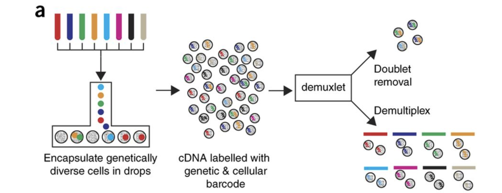

library(Seurat)
# Read in 10X data for a single sample (output is a sparse matrix)
ctrl_counts <- Read10X(data.dir = "data/scRNA-seq_online/ctrl_raw_feature_bc_matrix")
# Turn count matrix into a Seurat object (output is a Seurat object)
ctrl <- CreateSeuratObject(counts = ctrl_counts,
project = "pbmc_ctrl",
min.features = 100)17 数据导入与Seurat对象构建

After quantifying gene expression we need to bring this data into R to generate metrics for performing QC. In this lesson we will talk about the format(s) count data can be expected in, and how to read it into R so we can move on to the QC step in the workflow. We will also discuss the dataset we will be using and the associated metadata.
17.1 Exploring the example dataset
For this workshop we will be working with a single-cell RNA-seq dataset which is part of a larger study from (Kang et al. 2017). In this paper, the authors present a computational algorithm that harnesses genetic variation (eQTL) to determine the genetic identity of each droplet containing a single cell (singlet) and identify droplets containing two cells from different individuals (doublets).
The data used to test their algorithm is comprised of pooled Peripheral Blood Mononuclear Cells (PBMCs) taken from eight lupus patients, split into control and interferon beta-treated (stimulated) conditions.

Image credit: Kang et al, 2017
Raw data
This dataset is available on GEO (GSE96583), however the available counts matrix lacked mitochondrial reads, so we downloaded the BAM files from the SRA (SRP102802). These BAM files were converted back to FASTQ files, then run through Cell Ranger to obtain the count data that we will be using.
NOTE: The count data for this dataset is also freely available from 10X Genomics and is used in the Seurat tutorial.
Metadata
In addition to the raw data, we also need to collect information about the data; this is known as metadata. There is often a temptation to just start exploring the data, but it is not very meaningful if we know nothing about the samples that this data originated from.
Some relevant metadata for our dataset is provided below:
The libraries were prepared using 10X Genomics version 2 chemistry
The samples were sequenced on the Illumina NextSeq 500
-
PBMC samples from eight individual lupus patients were separated into two aliquots each.
- One aliquot of PBMCs was activated by 100 U/mL of recombinant IFN-β for 6 hours.
- The second aliquot was left untreated.
- After 6 hours, the eight samples for each condition were pooled together in two final pools (stimulated cells and control cells). We will be working with these two, pooled samples. (We did not demultiplex the samples because SNP genotype information was used to demultiplex in the paper and the barcodes/sample IDs were not readily available for this data. Generally, you would demultiplex and perform QC on each individual sample rather than pooling the samples.)
12,138 and 12,167 cells were identified (after removing doublets) for control and stimulated pooled samples, respectively.
-
Since the samples are PBMCs, we will expect immune cells, such as:
- B cells
- T cells
- NK cells
- monocytes
- macrophages
- possibly megakaryocytes
It is recommended that you have some expectation regarding the cell types you expect to see in a dataset prior to performing the QC. This will inform you if you have any cell types with low complexity (lots of transcripts from a few genes) or cells with higher levels of mitochondrial expression. This will enable us to account for these biological factors during the analysis workflow.
None of the above cell types are expected to be low complexity or anticipated to have high mitochondrial content.
17.2 Loading single-cell RNA-seq count data
Regardless of the technology or pipeline used to process your raw single-cell RNA-seq sequence data, the output with quantified expression will generally be the same. That is, for each individual sample you will have the following three files:
- a file with the cell IDs, representing all cells quantified
- a file with the gene IDs, representing all genes quantified
- a matrix of counts per gene for every cell
We can explore these files by clicking the data/ctrl_raw_feature_bc_matrix folder:
1. barcodes.tsv
This is a text file which contains all cellular barcodes present for that sample. Barcodes are listed in the order of data presented in the matrix file (i.e. these are the column names).
2. features.tsv
This is a text file which contains the identifiers of the quantified genes. The source of the identifier can vary depending on what reference (i.e. Ensembl, NCBI, UCSC) you use in the quantification methods, but most often these are official gene symbols. The order of these genes corresponds to the order of the rows in the matrix file (i.e. these are the row names).

3. matrix.mtx
This is a text file which contains a matrix of count values. The rows are associated with the gene IDs above and columns correspond to the cellular barcodes. Note that there are many zero values in this matrix.
Loading this data into R requires us to use functions that allow us to efficiently combine these three files into a single count matrix. However, instead of creating a regular matrix data structure, the functions we will use create a sparse matrix to reduce the amount of memory (RAM), processing capacity (CPU) and storage required to work with our huge count matrix.
Different methods for reading in data include:
-
readMM(): This function is from theMatrixpackage and will convert our standard matrix into a sparse matrix. Thefeatures.tsvfile andbarcodes.tsvmust first be individually loaded into R and then they can be combined. For specific code and instructions on how to do this please see these additional material. -
Read10X(): This function is from theSeuratpackage and will use the Cell Ranger output directory as input, directly. With this method individual files do not need to be loaded in, instead the function will load and combine them into a sparse matrix. We will be using this function to load in our data!
Reading in a single sample
After processing 10X data using its proprietary software Cell Ranger, you will have an outs directory (always). Within this directory you will find a number of different files including the files listed below:
-
web_summary.html: report that explores different QC metrics, including the mapping metrics, filtering thresholds, estimated number of cells after filtering, and information on the number of reads and genes per cell after filtering. - BAM alignment files: files used for visualization of the mapped reads and for re-creation of FASTQ files, if needed
-
filtered_feature_bc_matrix: folder containing all files needed to construct the count matrix using data filtered by Cell Ranger -
raw_feature_bc_matrix: folder containing all files needed to construct the count matrix using the raw unfiltered data
While Cell Ranger performs filtering on the expression counts (see note below), we wish to perform our own QC and filtering because we want to account for the biology of our experiment/biological system. Given this we are only interested in the raw_feature_bc_matrix folder in the Cell Ranger output.
Why do we not use the filtered_feature_bc_matrix folder?
The filtered_feature_bc_matrix uses internal filtering criteria by Cell Ranger, and we do not have control of what cells to keep or abandon.
The filtering performed by Cell Ranger when generating the filtered_feature_bc_matrix is often good; however, sometimes data can be of very high quality and the Cell Ranger filtering process can remove high quality cells. In addition, it is generally preferable to explore your own data while taking into account the biology of the experiment for applying thresholds during filtering. For example, if you expect a particular cell type in your dataset to be smaller and/or not as transcriptionally active as other cell types in your dataset, these cells have the potential to be filtered out. However, with Cell Ranger v3 they have tried to account for cells of different sizes (for example, tumor vs infiltrating lymphocytes), and now may not filter as many low quality cells as needed.
If we had a single sample, we could generate the count matrix and then subsequently create a Seurat object:
Note
The min.features argument specifies the minimum number of genes that need to be detected per cell. This argument will filter out poor quality cells that likely just have random barcodes encapsulated without any cell present. Usually, cells with less than 100 genes detected are not considered for analysis.
Seurat automatically creates some metadata for each of the cells when you use the Read10X() function to read in data. This information is stored in the meta.data slot within the Seurat object.
# Explore the metadata
head(ctrl@meta.data) orig.ident nCount_RNA nFeature_RNA
AAACATACAATGCC-1 pbmc_ctrl 2344 874
AAACATACATTTCC-1 pbmc_ctrl 3125 896
AAACATACCAGAAA-1 pbmc_ctrl 2578 725
AAACATACCAGCTA-1 pbmc_ctrl 3261 979
AAACATACCATGCA-1 pbmc_ctrl 746 362
AAACATACCTCGCT-1 pbmc_ctrl 3519 866What do the columns of metadata mean?
-
orig.ident: this often contains the sample identity if known。通过CreateSeuratObject中的project参数可以指定，默认是”SeuratProject” -
nCount_RNA: number of UMIs per cell -
nFeature_RNA: number of genes detected per cell
Reading in multiple samples with a for loop
In practice, you will likely have several samples that you will need to read in data for, and that can get tedious and error-prone if you do it one at a time. So, to make the data import into R more efficient we can use a for loop, which will iterate over a series of commands for each of the inputs given and create seurat objects for each of our samples.
Today we will use it to iterate over the two sample folders and execute two commands for each sample as we did above for a single sample - (1) read in the count data (Read10X()) and (2) create the Seurat objects from the read in data (CreateSeuratObject()):
for (file in c("ctrl_raw_feature_bc_matrix", "stim_raw_feature_bc_matrix")){
seurat_data <- Read10X(data.dir = paste0("data/scRNA-seq_online/", file))
seurat_obj <- CreateSeuratObject(counts = seurat_data,
min.features = 100,
project = file)
assign(file, seurat_obj)
}The last command assigns the Seurat object created (seurat_obj) to a new variable. In this way, when we iterate and move on to the next sample in our input we will not overwrite the Seurat object created in the previous iteration.
Now that we have created both of these objects, let’s take a quick look at the metadata:
head(ctrl_raw_feature_bc_matrix@meta.data) orig.ident nCount_RNA nFeature_RNA
AAACATACAATGCC-1 ctrl_raw_feature_bc_matrix 2344 874
AAACATACATTTCC-1 ctrl_raw_feature_bc_matrix 3125 896
AAACATACCAGAAA-1 ctrl_raw_feature_bc_matrix 2578 725
AAACATACCAGCTA-1 ctrl_raw_feature_bc_matrix 3261 979
AAACATACCATGCA-1 ctrl_raw_feature_bc_matrix 746 362
AAACATACCTCGCT-1 ctrl_raw_feature_bc_matrix 3519 866head(stim_raw_feature_bc_matrix@meta.data) orig.ident nCount_RNA nFeature_RNA
AAACATACCAAGCT-1 stim_raw_feature_bc_matrix 1221 606
AAACATACCCCTAC-1 stim_raw_feature_bc_matrix 1782 807
AAACATACCCGTAA-1 stim_raw_feature_bc_matrix 1451 605
AAACATACCCTCGT-1 stim_raw_feature_bc_matrix 1549 747
AAACATACGAGGTG-1 stim_raw_feature_bc_matrix 1303 558
AAACATACGCGAAG-1 stim_raw_feature_bc_matrix 5445 1330Next, we need to merge these objects together into a single Seurat object. This will make it easier to run the QC steps for both sample groups together and enable us to easily compare the data quality for all the samples.
We can use the merge() function from the Seurat package to do this. 其中的add.cell.id参数用于给细胞barcode前面再加上表示其来源的样本的信息，这里有两种来源，即“ctrl”和“stim”。
合并前的每个样本的数据被存储在合并后的Seurat对象的不同layer中：

Because the same cell IDs can be used for different samples, we add a sample-specific prefix to each of our cell IDs using the add.cell.id argument.
What if I am merging more than two samples?
Seurat now has functionality to merge many samples together. You can do this quite easily by adding all sample objects to the y argument in a vector format. An example is provided below:
```{r}
#| eval: false
merged_seurat <- merge(x = ctrl_raw_feature_bc_matrix,
y = c(stim1_raw_feature_bc_matrix,
stim2_raw_feature_bc_matrix,
stim3_raw_feature_bc_matrix),
add.cell.id = c("ctrl", "stim1", "stim2", "stim3"))
```If we look at the metadata of the merged object we should be able to see the prefixes in the rownames:
# Check that the merged object has the appropriate sample-specific prefixes
head(merged_seurat@meta.data) orig.ident nCount_RNA nFeature_RNA
ctrl_AAACATACAATGCC-1 ctrl_raw_feature_bc_matrix 2344 874
ctrl_AAACATACATTTCC-1 ctrl_raw_feature_bc_matrix 3125 896
ctrl_AAACATACCAGAAA-1 ctrl_raw_feature_bc_matrix 2578 725
ctrl_AAACATACCAGCTA-1 ctrl_raw_feature_bc_matrix 3261 979
ctrl_AAACATACCATGCA-1 ctrl_raw_feature_bc_matrix 746 362
ctrl_AAACATACCTCGCT-1 ctrl_raw_feature_bc_matrix 3519 866tail(merged_seurat@meta.data) orig.ident nCount_RNA nFeature_RNA
stim_TTTGCATGCGACAT-1 stim_raw_feature_bc_matrix 620 295
stim_TTTGCATGCTAAGC-1 stim_raw_feature_bc_matrix 1641 545
stim_TTTGCATGGGACGA-1 stim_raw_feature_bc_matrix 1233 518
stim_TTTGCATGGTGAGG-1 stim_raw_feature_bc_matrix 1084 469
stim_TTTGCATGGTTTGG-1 stim_raw_feature_bc_matrix 818 432
stim_TTTGCATGTCTTAC-1 stim_raw_feature_bc_matrix 1104 438# 保存
saveRDS(merged_seurat, file = "output/scRNA-seq_online/merged_seurat.rds")
Kang, Hyun Min, Meena Subramaniam, Sasha Targ, Michelle Nguyen, Lenka Maliskova, Elizabeth McCarthy, Eunice Wan, et al. 2017. “Multiplexed Droplet Single-Cell RNA-Sequencing Using Natural Genetic Variation.” Nature Biotechnology 36 (1): 89–94. https://doi.org/10.1038/nbt.4042.